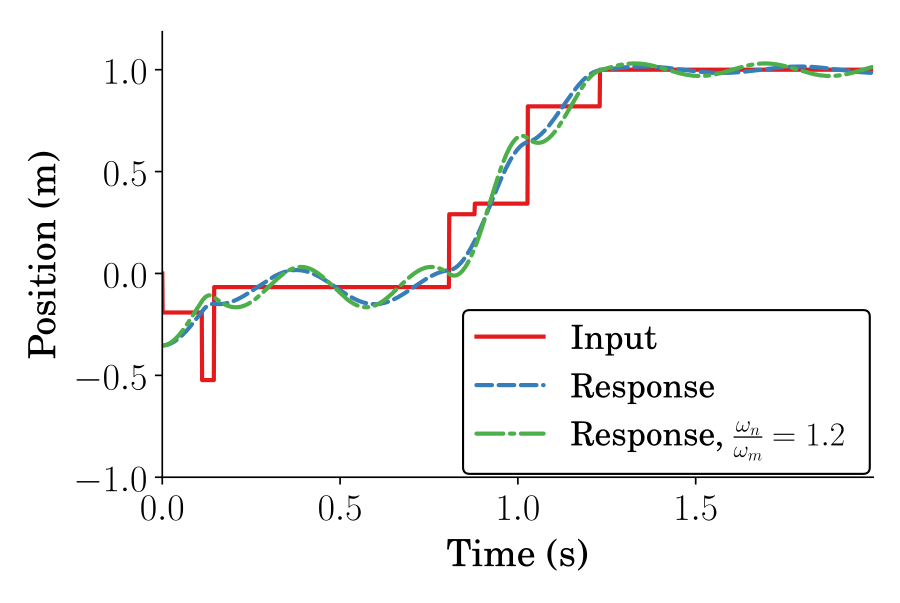

Eliminating Nonzero Initial States in Flexible Systems through Specified Insensitivity Input Shaping
Daniel Newman & Joshua Vaughan
University of Louisiana at Lafayette
Department of Mechanical Engineering
joshua.vaughan@louisiana.edu
@Doc_Vaughan
http://www.ucs.louisana.edu/~jev9637/
Outline
- Input Shaping Background
- Or here
- Or here
- Or here
ZV-IC Shaper Solution
$$
\begin{align}
& \underset{t}{\text{minimize}}
& & t_n \\
& \fragment{1}{\text{subject to}}
& &\fragment{2}{PRV_{IC} = 0}\\
&&&\fragment{3}{A_i > 0}\\
&&&\fragment{4}{\sum_{i=1}^{n} A_i = 1}\\
\end{align}
$$
SI-IC Response

Input Shaping Process